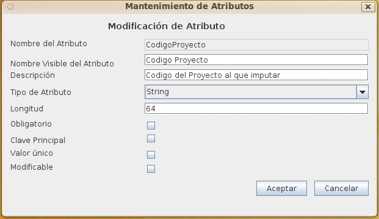

Mantenimiento de Atributos
Al seleccionar en el formulario de Mantenimiento Definiciones de Objetos las opciones de Alta, Baja o Modificación Metadatos aparecerá este formulario con diversos campos activados o desactivados.
Este formulario contiene la información:
- Nombre identificativo: Identificador del metadato cuyo valor no puede repetirse ni cambiar una vez asignado. Puede tener una longitud máxima de 32 caracteres. (Ej. "CodigoProyecto"). Es el nombre que se utiliza internamente y que deberá utilizarse al integrar por medio del API.
- Nombre Visible: Es el nombre que los usuarios verá en los distintos formularios y listados de OPD. Puede tener una longitud máxima de 32 caracteres. (Ej. "Codigo de Proyecto").
- Descripción del atributo: Descripción que permita ampliar información acerca del uso y sentido del metadato. Aparecerá como ayuda en los formularios en que aparezca el metadato. Puede tener una longitud máxima de 128 caracteres. (Ej.: "Código de Proyecto según la normativa interna XCP")
- Tipo de Metadato : El tipo de metadato puede ser: Cadena, Fecha, Fecha-Hora, entero, flotante o lógico.
- Longitud: En caso de ser de tipo cadena, longitud máxima que admitirá el metadato.
- Obligatorio: Valor booleano que indica si el metadato es obligatorio al introducir un documento.
- Clave Principal: Valor booleano que indica si el metadato es la clave principal.
- Único: Valor booleano que indica si no puede repetirse valores para los documentos del tipo.
- Modificable: Valor booleano que indica el metadato se puede modificar DESPUES de dar de alta el documento.
De acuerdo a las características indicadas de cada metadato, al insertar o modificar los documentos se exigirá el cumplimiento de las condiciones.

Ver: Mantenimiento Definiciones de Objetos
Índice Ayuda OpenProdoc